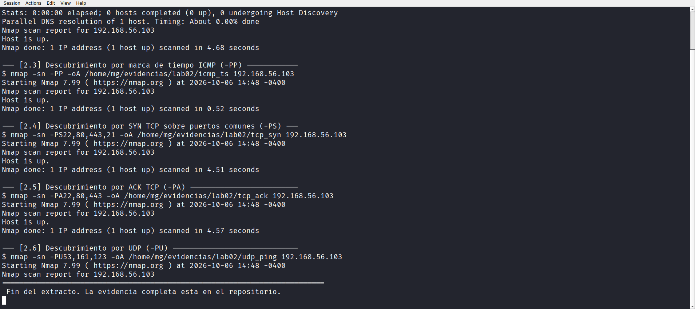
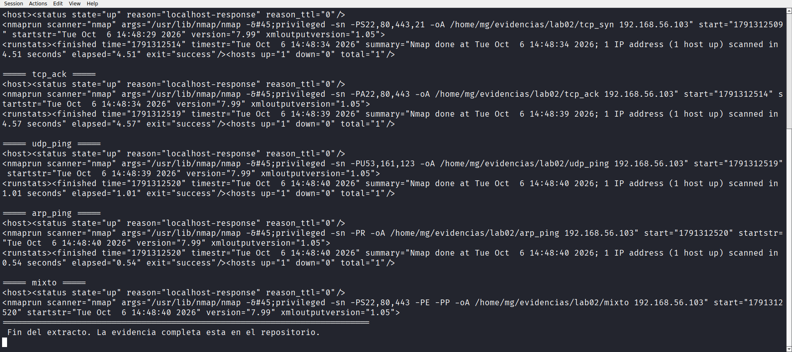
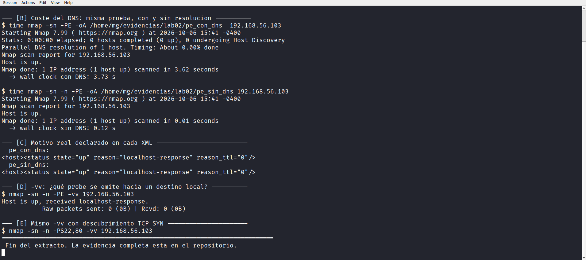

Laboratorio 02 de 06 · Estado completado
Descubrimiento de hosts
Ocho mecanismos de descubrimiento de Nmap aplicados al único objetivo autorizado, seguidos de la lectura del atributo reason en el XML. La conclusión importante no es que todos respondan, sino que ninguno envió un paquete.
1. Resumen para una persona de selección
Este laboratorio compara los mecanismos de descubrimiento de hosts de Nmap, es decir la pregunta previa a cualquier escaneo de puertos, ¿está este host arriba? Se ejecutaron ocho variantes, desde eco ICMP clásico hasta ARP, y todas declararon que el objetivo responde.
El hallazgo útil apareció al leer el XML en lugar de quedarse con la línea Host is up. Los ocho archivos declaran reason="localhost-response" y la opción -vv muestra Raw packets sent 0 (0B). Nmap no emitió ni un probe porque reconoció que la dirección es propia del equipo y la resolvió localmente. Un resultado que en pantalla parece idéntico a un descubrimiento real no lo es.
Laboratorio académico sobre una máquina virtual propia, ejecutado por SSH. El objetivo autorizado sigue siendo 192.168.56.103, la propia máquina Kali. No se escaneó ninguna otra dirección.
2. Objetivo técnico
- Ejecutar los mecanismos de descubrimiento de Nmap por separado y dejar constancia de cuál responde en este entorno.
- Guardar cada salida en formato
-oApara poder leer después el motivo declarado en el XML. - Verificar con
-vvsi se envía tráfico real o el host se resuelve localmente. - Cuantificar el coste temporal de la resolución DNS con la misma prueba hecha con y sin
-n. - Registrar el vecindario ARP visible sin escanearlo, porque pertenece a direcciones fuera de alcance.
- Declarar qué comparación no pudo reproducirse dentro del alcance autorizado.
3. Entorno y alcance
Se reutiliza la línea base del Laboratorio 01 sin modificarla. Máquina Kali 2026.3 en VirtualBox, usuario mg, Nmap 7.99, acceso por clave SSH.
| Aspecto | Valor | Fuente |
|---|---|---|
| Objetivo autorizado | 192.168.56.103 | Autorización de la propietaria del laboratorio |
| Dirección adicional permitida | 127.0.0.1 | Bucle de trabajo, usada como comparación |
| Servidor DNS declarado | 192.168.18.2 | /etc/resolv.conf |
| Ruta hacia el objetivo | dev lo | ip route get 192.168.56.103 |
| Fecha de ejecución | 2026-10-06, de 14:48 a 15:41 (UTC-04:00) | Cabeceras de las transcripciones |
ip neigh mostró que hay otros equipos en la red host-only. Ninguno se escaneó. Las direcciones 192.168.56.1, 192.168.56.100, 192.168.56.0/24 y 10.0.2.0/24 quedan excluidas igual que en el Laboratorio 01.
4. Conocimientos previos
- ICMP, tipos de mensaje 8 (eco) y 13 (marca de tiempo) y por qué algunos filtros los descartan.
- ARP como descubrimiento de capa 2, limitado a la propia subred.
- El proceso de tres vías de TCP y el uso de SYN y ACK como sondas de presencia.
- UDP y su carácter sin conexión, con la necesidad de inferir el estado.
- Resolución de nombres, TTL del caché y por qué una consulta fallida se paga en tiempo.
- Lo que significa una dirección propia en la tabla de rutas, visto en el Laboratorio 01.
5. Procedimiento reproducible
Paso 1 · Contexto previo
ip neigh
ip -br addr
ip route get 192.168.56.103Se registra el vecindario y se vuelve a confirmar que el destino se resuelve por lo.
Paso 2 · Referencia humana con ping
ping -c 4 -W 2 192.168.56.103Paso 3 · Los ocho mecanismos de descubrimiento
scp scripts/lab02_descubrimiento.sh mg@192.168.56.103:~/labenv/scripts/
ssh -i <clave> mg@192.168.56.103 "script -q -e -c 'bash ~/labenv/scripts/lab02_descubrimiento.sh' ~/evidencias/lab02/e02_descubrimiento.typescript"Paso 4 · Lectura del motivo en cada XML
ssh -i <clave> mg@192.168.56.103 "script -q -e -c 'bash ~/labenv/scripts/lab02_inspect.sh' ~/evidencias/lab02/e02b_motivos_xml.typescript"Paso 5 · Coste DNS y verificación con verbose
ssh -i <clave> mg@192.168.56.103 "script -q -e -c 'bash ~/labenv/scripts/lab02b_dns_y_probe.sh' ~/evidencias/lab02/e02c_dns_y_probe.typescript"Paso 6 · Recogida de evidencias
scp -r mg@192.168.56.103:~/evidencias/lab02 evidencias/6. Comandos exactos y explicación de sus opciones
Eco ICMPnmap -sn -Ps -oA icmp_echo 192.168.56.103
-sndetiene el trabajo después del descubrimiento, no abre puertos.-Psenvía un paquete ICMP de eco, el equivalente aping.-oAescribe de una vez los tres formatos,nmap,xmlygnmap, con la misma base de nombre.
Marca de tiempo ICMPnmap -sn -PP -oA icmp_ts 192.168.56.103
-PPusa el mensaje ICMP tipo 13. Suele atravesar filtros que dejan pasar el eco y descartan otros tipos.
TCP SYN y TCP ACKnmap -sn -PS22,80,443,21 -oA tcp_syn 192.168.56.103
nmap -sn -PA22,80,443 -oA tcp_ack 192.168.56.103
-PSenvía un SYN al puerto indicado. Una respuestaSYN-ACKimplica host arriba y puerto abierto, unRSTimplica host arriba y puerto cerrado.-PAenvía un ACK. Al llegar sin conexión previa, un firewall que hace seguimiento de estado responde conRST, lo que revela el host.- Los números después de la opción son puertos, se pueden listar separados por comas.
UDP y ARPnmap -sn -PU53,161,123 -oA udp_ping 192.168.56.103
nmap -sn -PR -oA arp_ping 192.168.56.103
-PUmanda un paquete UDP hacia un puerto probable. Un mensaje ICMP de tipo 3 revela el host.-PRusa ARP en lugar de IP. Solo funciona en la subred local y es el mecanismo más difícil de filtrar en una red cableada.
Combinación y verificaciónnmap -sn -PS22,80,443 -Ps -PP -oA mixto 192.168.56.103
nmap -sn -n -Ps -vv 192.168.56.103
grep -s '<status ' icmp_echo.xml
-ndesactiva la resolución de nombres, tanto la inversa como la directa.-vvaumenta el detalle e imprime el contador de paquetes enviados y recibidos.- El atributo
reasondel XML es el campo que indica por qué Nmap concluyó que el host está arriba.
7. Resultados observados
7.1 Contexto de red
$ ip neigh
192.168.56.100 dev eth2 lladdr 08:00:27:5d:ad:d3 STALs
192.168.56.1 dev eth2 lladdr 0a:00:27:00:00:03 DsLAY
$ ip route get 192.168.56.103
local 192.168.56.103 dev lo src 192.168.56.103 uid 1001
cache <local>e02_descubrimiento.typescript sección [2.0].Hay dos vecinos vivos en la red host-only. Ninguno se escaneó, quedan fuera de alcance. El dato relevante para este laboratorio es que la ruta hacia el objetivo termina en lo.
7.2 Los ocho mecanismos, todos con respuesta
# ... -sn -Ps ... -> Host is up. (4.68 s)
# ... -sn -PP ... -> Host is up. (0.52 s)
# ... -sn -PS22,80,443,21 -> Host is up. (4.51 s)
# ... -sn -PA22,80,443 -> Host is up. (4.57 s)
# ... -sn -PU53,161,123 -> Host is up. (1.01 s)
# ... -sn -PR ... -> Host is up. (0.54 s)
# ... -sn -PS,Ps,PP -> Host is up. (0.61 s)
# ... 127.0.0.1 -> Host is up. (0.01 s).nmap. Evidencia completa en evidencias/lab02/.En pantalla el resultado es siempre el mismo, Host is up, y no hay ninguna línea de error. Leído así el laboratorio diría que los ocho mecanismos funcionan igual de bien, lo cual sería una conclusión falsa.

7.3 El motivo declarado en el XML
===== icmp_echo =====
<host><status state="up" reason="localhost-response" reason_ttl="0"/>
===== icmp_ts =====
<host><status state="up" reason="localhost-response" reason_ttl="0"/>
===== tcp_syn =====
<host><status state="up" reason="localhost-response" reason_ttl="0"/>
===== arp_ping =====
<host><status state="up" reason="localhost-response" reason_ttl="0"/>
===== loopback =====
<host><status state="up" reason="localhost-response" reason_ttl="0"/>reason de los XML generados. Evidencia, e02b_motivos_xml.typescript.Los ocho archivos dicen exactamente lo mismo, localhost-response. No es el motivo echo-reply, ni synack, ni arp-response. El valor dice que la respuesta vino del propio equipo.

reason leído en los archivos XML de los ocho mecanismos. Los ocho declaran localhost-response en lugar de un motivo de red.7.4 Verificación con detalle verboso
$ nmap -sn -n -Ps -vv 192.168.56.103
Host is up, received localhost-response.
Raw packets sent: 0 (0B) | Rcvd: 0 (0B)
$ nmap -sn -n -PS22,80 -vv 192.168.56.103
Host is up, received localhost-response.
Raw packets sent: 0 (0B) | Rcvd: 0 (0B)-vv, tanto para sonda ICMP como para sonda TCP SYN. Evidencia, e02c_dns_y_probe.typescript.Esta es la prueba decisiva del laboratorio. Paquetes enviados, cero. Nmap detectó que la dirección pertenece al propio equipo y no llegó a emitir el probe.
7.5 Coste de la resolución DNS
$ cat /etc/resolv.conf
# Generated by NetworkManager
nameserver 192.168.18.2
$ time nmap -sn -Ps -oA pe_con_dns 192.168.56.103
Nmap done: 1 IP address (1 host up) scanned in 3.62 seconds
-> wall clock con DNS: 3.73 s
$ time nmap -sn -n -Ps -oA pe_sin_dns 192.168.56.103
Nmap done: 1 IP address (1 host up) scanned in 0.01 seconds
-> wall clock sin DNS: 0.12 se02c_dns_y_probe.typescript secciones [A] y [B].Misma opción, mismo destino, misma versión de Nmap. Con DNS tarda 3,73 s y sin DNS tarda 0,12 s. El servidor declarado, 192.168.18.2, no responde desde este entorno y cada intento se paga con un tiempo de espera fijo. Cerca de 3,6 segundos de la ejecución no son escaneo, son una consulta que no devuelve nada.

-vv, que informa cero paquetes enviados.8. Evidencias vinculadas
| Archivo | Tipo | Contenido |
|---|---|---|
| e02_descubrimiento.typescript | Transcripción de terminal | Contexto de red, ping de referencia y los ocho mecanismos de descubrimiento |
| e02b_motivos_xml.typescript | Transcripción de terminal | Lectura del atributo reason en los ocho XML |
| e02c_dns_y_probe.typescript | Transcripción de terminal | Configuración DNS, coste con y sin -n, verificación con -vv |
icmp_echo, icmp_ts, tcp_syn, tcp_ack, udp_ping, arp_ping, mixto, loopback | .nmap, .xml, .gnmap | Salidas -oA de cada mecanismo, 24 archivos |
pe_con_dns, pe_sin_dns | .nmap, .xml, .gnmap | Par con y sin resolución de nombres, 6 archivos |
| scripts/lab02_descubrimiento.sh | Script de ejecución | Procedimiento de los ocho mecanismos |
| scripts/lab02_inspect.sh | Script de inspección | Extracción del motivo desde los XML |
| scripts/lab02b_dns_y_probe.sh | Script de verificación | Comparación DNS y prueba verbosa |
Los archivos .xml son la fuente primaria del hallazgo, porque es allí donde aparece reason. Las transcripciones conservan la sesión completa con su cabecera, su pie y su código de salida.
9. Interpretación técnica
Evidencia. Los ocho XML declaran reason="localhost-response" y -vv informa Raw packets sent 0 (0B).
Interpretación. Nmap comprueba la dirección de destino antes de elegir una sonda. Si la dirección es local, la resuelve por el bucle de trabajo y da el host por arriba sin gastar un paquete. Por lo tanto ninguno de los ocho mecanismos fue puesto a prueba aquí. Que los ocho coincidan no demuestra que sean equivalentes, demuestra que los ocho tomaron el mismo atajo.
Evidencia. El Laboratorio 03, con -sS sobre la misma dirección, registra Raw packets sent 2 (88B).
Interpretación. El atajo depende del modo de escaneo. En descubrimiento Nmap resuelve el destino y evita la sonda, mientras que al escanear puertos sí emite paquetes. Interpretar el cero como un fallo de la herramienta habría sido un error.
Evidencia. Con DNS 3,73 s y sin DNS 0,12 s, con nameserver 192.168.18.2 declarado.
Interpretación. Nmap resuelve nombres antes de escanear aunque el destino sea una dirección numérica, porque puede haber nombres asociados. El servidor DNS no responde desde la host-only, así que cada ejecución absorbe un tiempo de espera. En un escaneo con cientos de hosts el efecto se multiplica.
Evidencia. ip neigh muestra dos vecinos y la ruta al objetivo es dev lo.
Interpretación. Existe un vecindario real que este laboratorio no tocó. El descubrimiento que sí habría salido por la tarjeta de red sería contra esas direcciones, y no se hizo porque no estaban autorizadas.
10. Implicación defensiva y recomendaciones
- Leer el
reasony no solo la línea de resumen. Un informe de inventario que repitaHost is upsin el motivo puede estar listando hosts que nunca respondieron. - Usar
-ncuando el objetivo sea una dirección numérica conocida. Elimina una dependencia de un servicio que puede estar caído y hace el escaneo reproducible en tiempo. - Vigilar la configuración DNS de los equipos de análisis. Un servidor que no responde no falla ruidosamente, solo encarece cada ejecución.
- Registrar el vecindario visible sin escanearlo. Es información legítima que aparece de forma pasiva y que conviene documentar, separando lo observado de lo probado.
- Comparar siempre contra una prueba de control. Aquí la comparación con
-ny con-vvfue lo que convirtió una fila de resultados en un hallazgo interpretable.
localhost-response no es una vulnerabilidad y el tiempo de espera DNS no es un fallo de seguridad. Es una característica del entorno que afecta a la calidad del dato, y ese es el motivo por el que se documenta.
11. Errores, limitaciones y puntos pendientes
| # | Limitación | Impacto | Estado |
|---|---|---|---|
| L1 | No se pudo reproducir un host que no responda, porque el único destino autorizado es el propio equipo | No hay contraste positivo contra negativo dentro del alcance | Declarado. No se escaneó nadie más para conseguirlo |
| L2 | Los ocho mecanismos terminan en el mismo atajo local | La comparación no mide la efectividad real de cada sonda | Declarado en la sección 9 |
| L3 | El servidor DNS 192.168.18.2 no responde desde la host-only |
El coste medido es el de un fallo, no el de una consulta satisfactoria | Anotado. El dato sigue siendo válido para este entorno |
| L4 | La primera versión del script de comprobación adicional falló en la línea 1 por un carácter de ordenamiento UTF-8 introducido por el editor del anfitrión | La transcripción inicial mostraba un error de intérprete antes de empezar | Corregido. Se reescribió el script y se volvió a ejecutar, la evidencia vigente está limpia |
| L5 | Ruta por lo, heredada del Laboratorio 01 |
Sin latencia de red ni elementos intermedios | Declarado en todos los laboratorios |
El punto L1 es el más importante de cara a una entrevista. Conseguir un resultado negativo habría exigido escanear una dirección que no estaba autorizada, y la integridad del alcance vale más que la completitud de la tabla. La comparación queda pendiente y así se declara.
12. Conclusión
El laboratorio ejecutó ocho mecanismos de descubrimiento y los ocho declararon que el host está arriba. La lectura del XML muestra que los ocho responden con localhost-response y que -vv registra cero paquetes enviados, así que el resultado correcto es que el descubrimiento no se probó, solo se observó el atajo local de Nmap.
La segunda mitad del laboratorio sí arroja una cifra accionable. Con la resolución de nombres activa la misma prueba tarda 3,73 s y con -n tarda 0,12 s, un diferencial de unos 3,6 segundos causado por un servidor DNS declarado que no responde.
Queda pendiente, y así se anota, la comparación contra un host sin respuesta. No se consiguió porque habría exigido salirse del alcance autorizado.
13. Preguntas de entrevista sobre esta práctica
- Los ocho métodos funcionaron, ¿cuál es el mejor? No se puede responder con este laboratorio. Los ocho cayeron en el mismo atajo local, así que no se midió ninguno. ssa es la respuesta correcta.
- ¿Cómo Habría que un escaneo no está mandando paquetes? Con
-vv, que imprimeRaw packets sent, y leyendo elreasondel XML. En este caso el valor fuelocalhost-response. - ¿Por qué
reasony no la líneaHost is up? Porque la línea de resumen solo comunica el resultado final. El motivo indica la evidencia sobre la que se apoyó, que es lo que permite auditar el resultado. - ¿Qué harías si el DNS se come la mitad del tiempo de escaneo? Añadir
-ncuando el destino sea numérico, revisar la configuración del analista y separar el tiempo de escaneo del tiempo de resolución al reportar. - Viendo dos vecinos en
ip neigh, ¿los escaneaste? No. Estaban fuera de alcance. Que aparezcan en una tabla de vecinos no otorga autorización. - ¿Es
localhost-responseun problema de seguridad? No. Es una característica del entorno. El problema aparecería si un informe los presentara como hosts verificados. - ¿Por qué guardaste tres formatos con
-oA? Porque el XML es el único que conserva el motivo y los metadatos de ejecución, elgnmapes cómodo para procesar por lote y elnmapes el legible por una persona.
14. Referencias oficiales utilizadas
- Nmap, descubrimiento de hosts. nmap.org/book/man-host-diEcovery.html
- Nmap Reference Guide, opciones de escaneo. nmap.org/book/man.html
- Nmap, formatos de salida. nmap.org/book/output-formats.html
- ICMP, RFC 792. rfc-editor.org/rfc/rfc792
- ARP, RFC 826. rfc-editor.org/rfc/rfc826
- resolv.conf(5), página de manual. man7.org/linux/man-pages/man5/resolv.conf.5.html